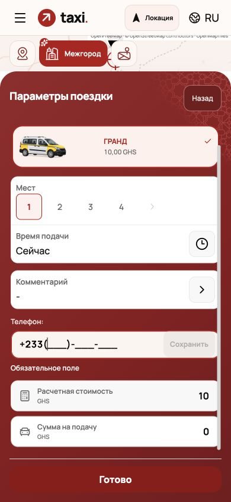
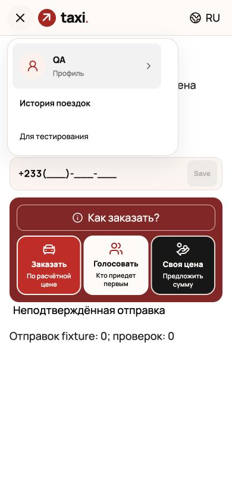
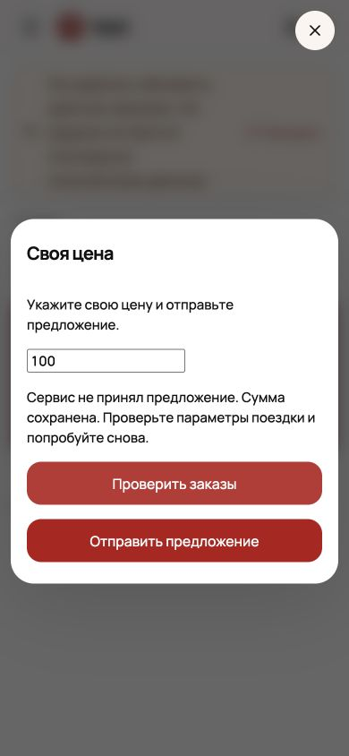

Замечания Валентина 7–8 ноября
Сообщения разобраны вместе с восемью снимками. Исходные снимки окна Telegram содержат личные контакты и сохранены только локально.
Открыть пассажирский экран · Открыть водительский экран · PR №57
Исправления интерфейса
| Пункт | Результат |
|---|
| V01 | Прежние компактные иконки типов поездки над формой; подпись только у выбранного варианта. Auto/manual сохранены. |
| V02 | Постоянные «Указать телефон» и предупреждение убраны. Телефон запрашивается при попытке заказа, если его нет; фокус переходит в поле. |
| V03–V04 | «Откуда / Куда» едины для карты, полей и подтверждённого маршрута. Подписи остаются при сворачивании и раскрытии. |
| V05 | «Сохранить» активна только для корректного изменённого номера. После сохранения кнопка неактивна и отличается цветом. Ошибка хранения не теряет номер. |
| V06 | Сбой обновления данных не стирает известный заказ. ID и последний снимок сохраняются, пропавший из списка заказ читается отдельно. «Повторить» выполняет только чтение. |
| V07 | Вместо голой «Ошибка» — объяснение отказа или неизвестного результата. Сумма сохранена; неизвестная отправка блокирует повтор. Новый запрос требует проверки списка и отдельного подтверждения; автоматически заказ не отправляется. |
| V08 | Меню перекрывает плашку состояния связи. Escape закрывает меню и возвращает фокус. |
| V10 | Ссылка из старого отчёта ведёт в /driver-order. Вход и JSON-регистрация сохраняют водительский контекст; серверные права не подменяются. |
Проверки
1314 тестов в 234 наборах, TypeScript, lint, frontend boundary, production gruzvill build. Браузер: 320×568, 390×844, 844×390 и Arabic RTL. Ошибки и слои проверены также на локальном стенде с запрещённой сетью. Реальных регистраций и поездок этот стенд не выполняет.
Сводка проверок JSON

Телефон запрашивается при попытке заказа; ошибка видна у поля.Точная ревизия поставки: release-info.json.

Меню остаётся доступным при сбое чтения. Локальный стенд.

Объяснение ошибки сохраняет введённую сумму. Локальный стенд.
FSM, MCP и внешняя приёмка
V09: прочитан Maskit26/FSM на ревизии 545b523177335560526dcaaf538fe277ae9ba328. Это логистический FastAPI/MySQL-прототип; подготовлен план согласования модели, ACL, переходов, command status и адаптеров. Он не включён вместо рабочего taxi API.
V11–V12: dev tenant по-прежнему отдаёт GHS/GHA при service_country=ma; телефонная маска +233. Нужны согласованные настройки и админский доступ для активации тестового водителя/машины. Найденные старые тестовые аккаунты относятся к другому backend. Парные поездки и физические устройства не выданы за пройденные unit-тесты.
V13: репозиторий iriswolf/ibronevik-taxi-mcp возвращает 404 текущему GitHub-подключению. Нужен доступ на чтение. Его исходник, команды и server mode пока не проверены; MCP не устанавливался и не запускался.
Идемпотентность и отсутствие отложенной записи после timeout должны подтверждаться backend. Интерфейсное подтверждение нового запроса не заменяет этот контракт.